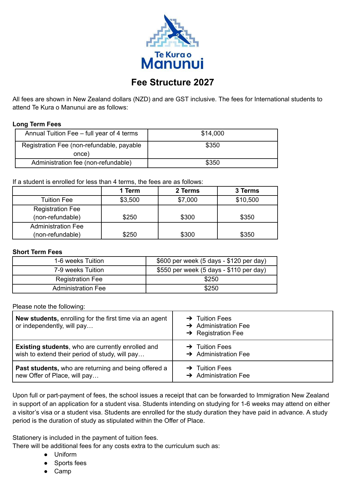
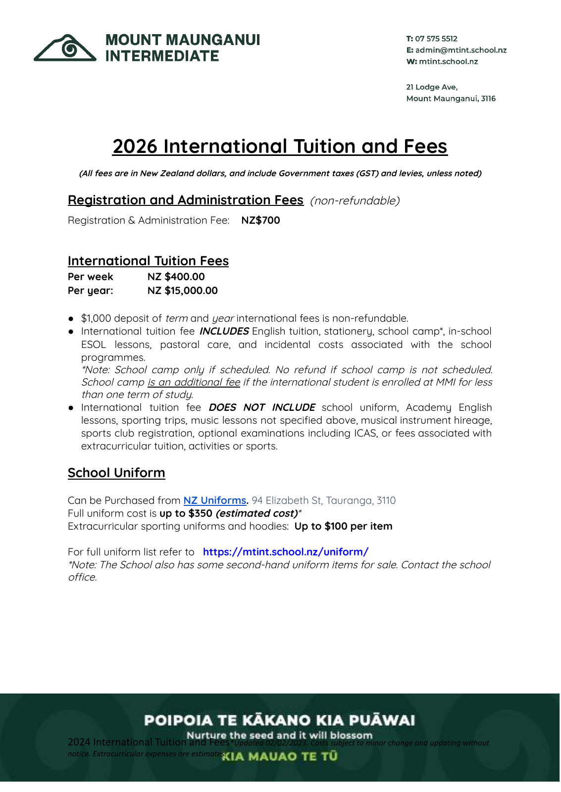
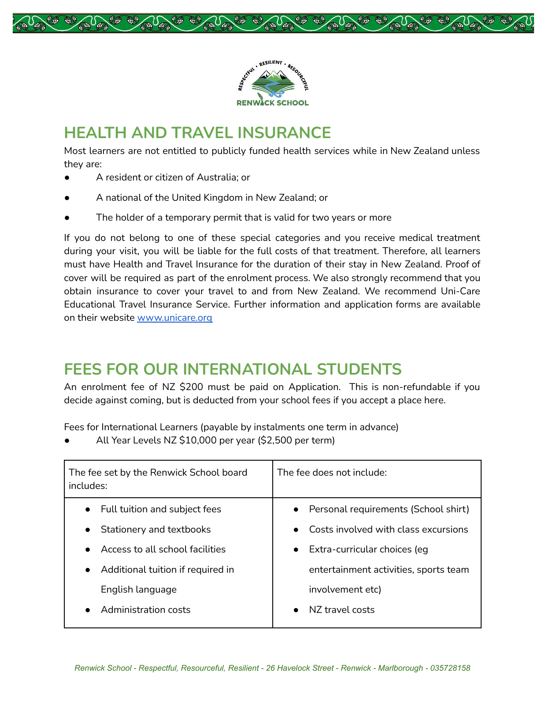
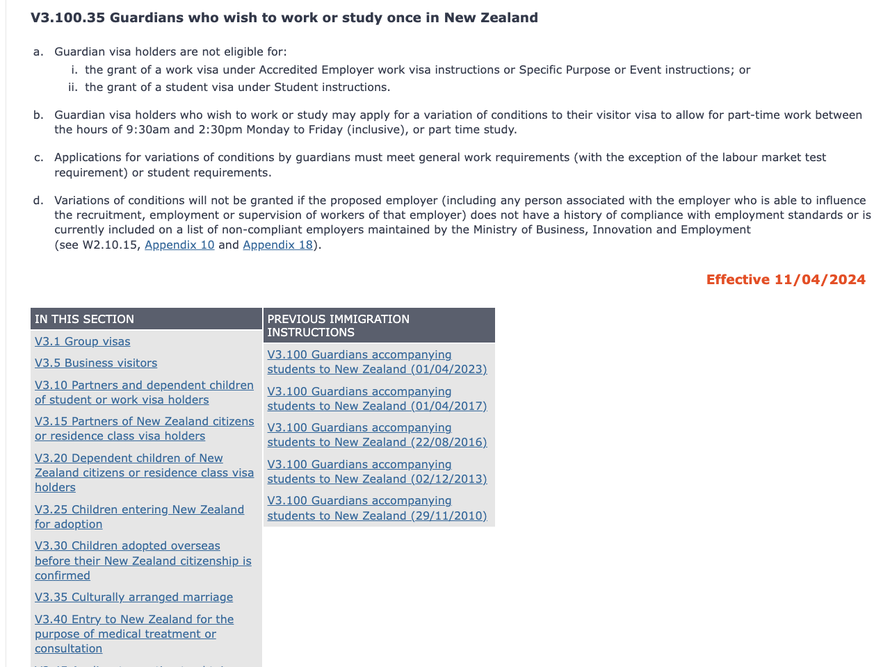
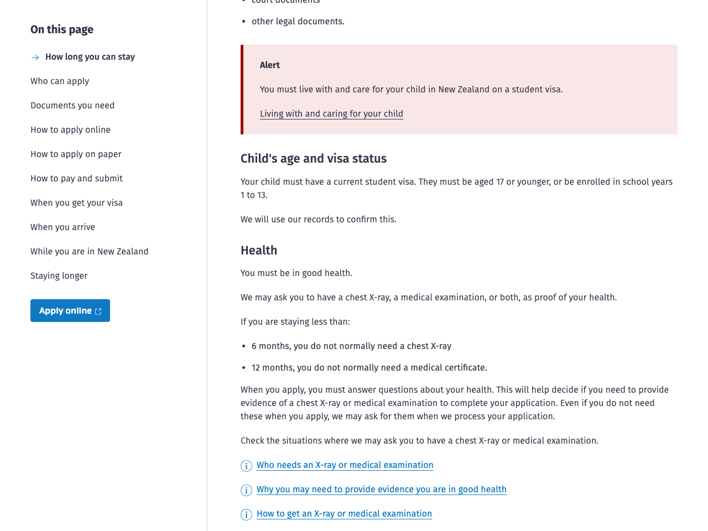
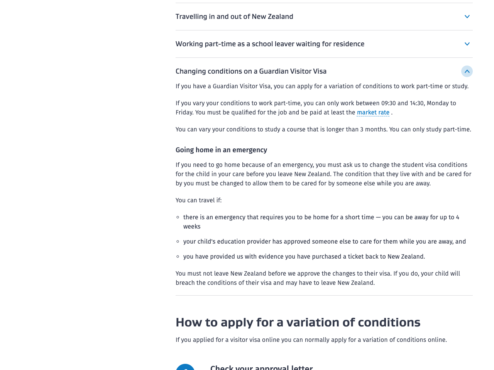
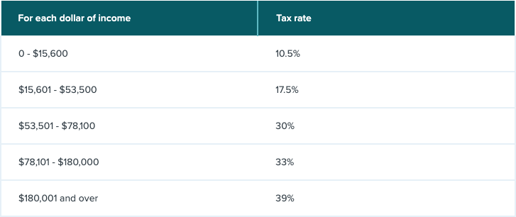
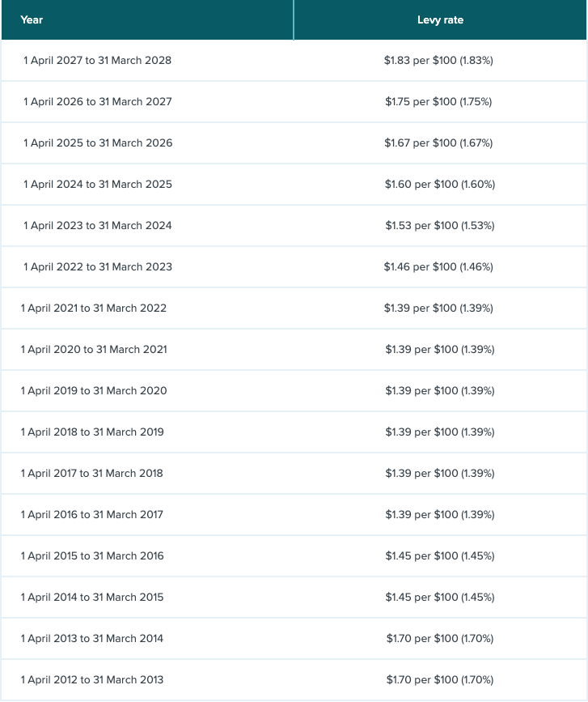

NZ孩子先行 · L01 签证与监护
INZ V3.100：陪读监护人操作规则
核查2026-09-17。现行页面标示生效日2024-04-11；监护资格、同住、续签及工作时段。不能据五小时窗口推导25小时开放工作权。
截图来自未改写的官方网页或原始PDF渲染，不是重新排版的“证据图片”。点击可放大，来源编号可预览并回到正文。
| 标签 | 可以说明 | 不能说明 |
|---|---|---|
| 已核实政策 | 核查日官方允许某类申请/条件 | 一定获批、五年不变、个人可不审查 |
| 学校公布价 | 指定年度/学段的费表 | 2027以后的锁价、已获录取、已获奖 |
| 挂牌/广告 | 房源/岗位在某时点被公开提供 | 仍然空缺、接受孩子入住/等待VOC、适合弱英语申请人 |
| 规划假设 | 用来反算价格、工时、汇率的上限 | 市场已经提供这一套50,000纽币全包方案 |
核查日2026-09-17；截图实际UTC时间见每张图与机器可读截图清单。旧版费表保留旧年份，不把网页仍在线误作当年确认。政策冲突时以现行规则及个案书面决定为准。[L01] [S03]
原PDF第1页：2027学费14,000，另注册350、行政350。
抓取：2026-09-17T16:01:04.562Z · PDF第1页
原PDF第1页：2026标题与旧页脚并存；费用需校方正式发票再确认。
抓取：2026-09-17T16:01:07.677Z · PDF第1页
原PDF第5页：10,000/年。现官网仍链接此updated2025文件，不代表2027或未来五年锁价。截图上半部旧医疗资格文字不作为本报告医疗结论；家长预算按自费保险处理。
抓取：2026-09-17T16:01:10.311Z · PDF第5页
看V3.100.35：工作时段、劳动力市场测试例外、雇主合规。官方旧手册关闭脚本以避免跳转，原文未修改。
抓取：2026-09-17T16:04:06.947Z · 官方网页局部视图
看同住照护要求；这不是本地开放工签。
抓取：2026-09-17T16:04:11.659Z · 官方网页局部视图
看Guardian Visitor Visa条件变更章节；申请与批准是两件事。
抓取：2026-09-17T16:04:17.938Z · 官方网页局部视图
看所得税阶；预算不能把税前工资全部拿来冲抵开销。
抓取：2026-09-17T16:04:20.282Z · 官方网页局部视图
看2026/27征费1.75%，2027/28为1.83%；主预算使用1.83%，后续年份需更新。
抓取：2026-09-17T16:05:56.202Z · 官方网页局部视图
| 缺口 | 向谁问 | 过关证据 |
|---|---|---|
| Renwick2027费率、连续年级/名额 | 学校国际生负责人 | 正式年份发票、入读年级与续年条款；旧网页检索不足 |
| 低租金房是否接受亲子 | 房东/物业＋学校 | 两人实际入住的租约、安全检查、上学/上班交通 |
| VOC实际批准周工时与更换雇主 | INZ/持牌顾问 | 针对该家长的书面答复与更新eVisa |
| 续陪读签是否重办VOC | INZ | 新签证的明示条件与申请流程，不能沿用失效旧条件 |
| 批准交换是否还能guardian同住 | INZ＋学校/交换机构 | 具体项目和孩子身份的书面确认 |
| 税/保险/服务费 | 合资格服务方 | 跨境税务建议、两人年度保险、透明服务报价；全部计入预算 |
没有联系学校或雇主代用户取得个案offer，没有提交签证、付费或租房申请。政策路径已查明，但执行供应链尚未锁定。[L05] [L06] [L11]
模板是研究核验工具，不是替家庭提供个案移民法律意见。[L07]
本轮核查2026-09-17；费表沿用各自标示年度。预算为分析，不是学校报价、签证决定或工作承诺。个案签证建议须由有资格的专业人士提供。
核查2026-09-17。现行页面标示生效日2024-04-11；监护资格、同住、续签及工作时段。不能据五小时窗口推导25小时开放工作权。
核查2026-09-17。Y7–8；15,000学费+700注册管理，含部分ESOL/校内项目；保险制服另计。不是2027报价。
核查2026-09-17。已公布2027报价：tuition14,000、registration350、administration350；Y1–6，非五年锁价。
核查2026-09-17。现官网链接的PDF，第5页10,000/年，200申请款录取后抵费；文件标注updated2025，虽迁移至2026目录，不等于2027报价。2026-09-18复核新链接；未取得当年书面确认。
核查2026-09-17。一位监护人与国际付费学生；资金、照护及禁止转换的签证类别。
核查2026-09-17。VOC不延长签证有效期；批准前不能按新条件工作。
核查2026-09-17。15,600以内10.5%，其后至53,500为17.5%；模型另扣ACC，不用税前工资抵支出。
核查2026-09-17。2026/27为1.75%；2027/28已公布1.83%。2027起示例暂按1.83%全年并冻结，后续年度须更新。
核查2026-09-17。2026-04-20现行规则；访客监护人与其他签证群体的工时规则不可混用。
核查2026-09-17。真实且可持续的job offer，雇主、职务、工资、地点、工时等资料与雇主合规。
核查2026-09-17。国际付费生学校须符合Code；批准交换与普通游学不同。页面部分仍提旧Notice，身份应交叉读L12现行说明。
核查2026-09-17。2025年10月版；Section C填写雇主、职务、工作地点与工时。申请时再查最新版。